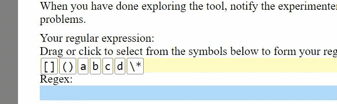
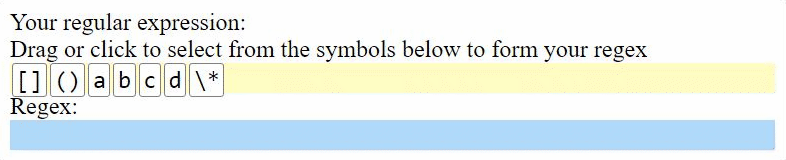
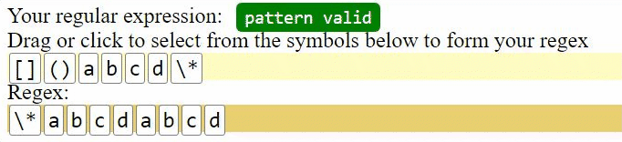
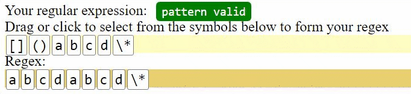
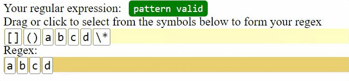

Tool 2 Tutorial(Parsons):
Next, let's get familiar with a second version of the tool, which presents the regular expression problems in the style of Parsons problems.
The only difference comparing with the previous tool is how you input the regex. We will get into this now. As for the test string input and unit test cases, they are the same with the regular version.
- Input Blocks
- Instead of writing Regex from scratch, in this version of the tool, the characters you might need for the problem is already provided. Note that you do not need to use all of them; some are distractors. If you are not sure the meanings of the symbol, hover on the block to see the tooltip of its description.

- To form your regex using the blocks, simply click on one block to add it to the end of the input, or drag one block to add it to anywhere of the input.

- After adding the block to the input area, you can drag the blocks to change its position in the Regex.

- To remove a block in the input area, simply click on it and it will be removed.

- Some blocks such as parentheses and square brackets expand automatically after added to the input by clicking or dragging, so you don't need to add the left and the right part separately.

Let's try solving a sample problem again. In this sample problem, please write a regular expression to match "abc".
Note that because this is a tutorial problem, it will not take you to the next problem right after you pass all the testcases.
When you have done exploring the tool, notify the experimenter so we can move on to working with the problems.